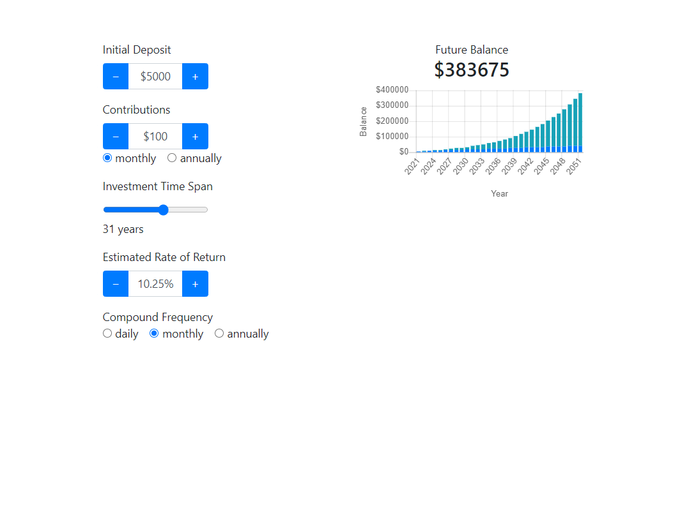
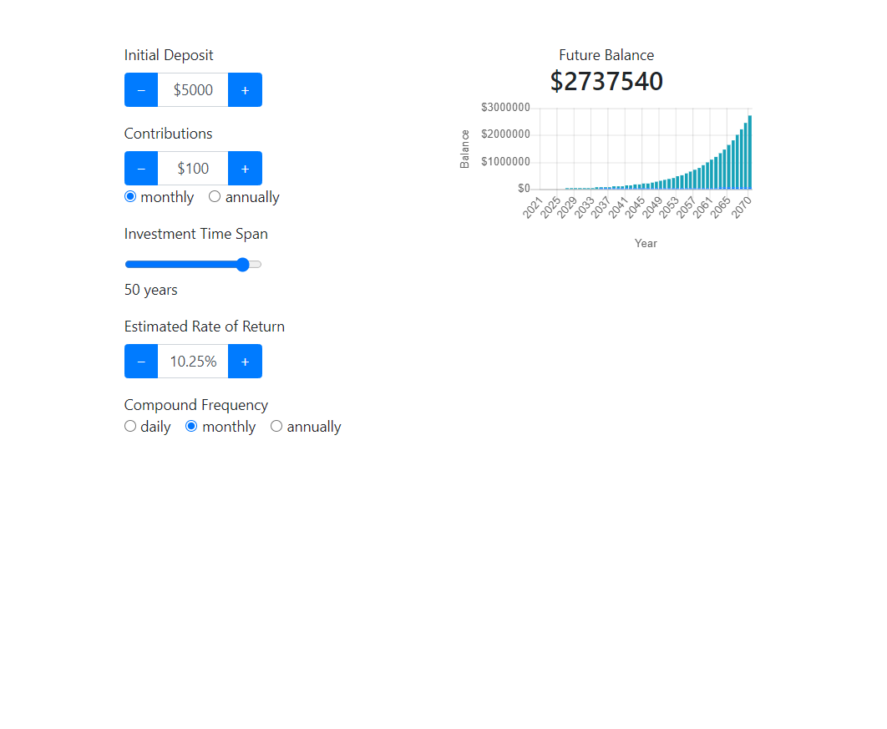
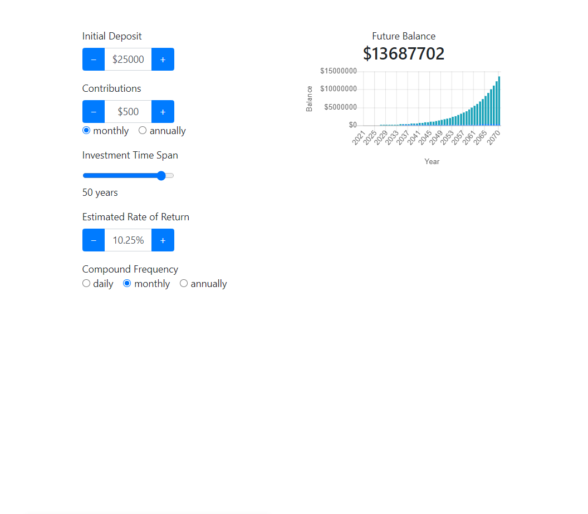
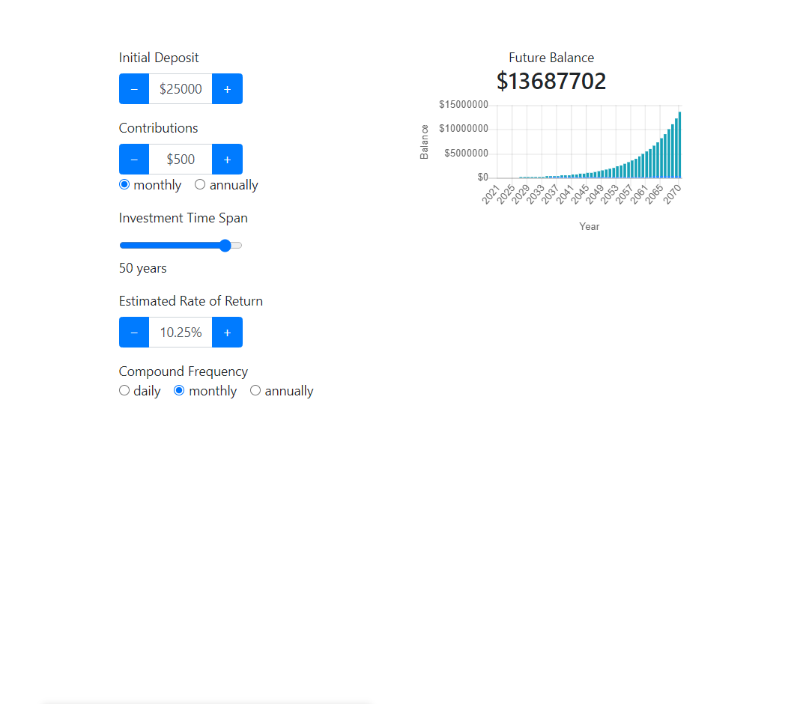

“Compound interest is the eighth wonder of the world. He who understands it, earns it ... he who doesn't ... pays it.” - Albert Einstein
Albert wasn’t alone with that idea. Many of the most influential and powerful people in the world gave recognition to the vast capability of compound interest. However, despite the subject's crucial educational value, compound interest is rarely discussed in common education systems. James Surowiecki, financial writer for The New Yorker, once stated “I think people don't understand compound interest because typically no one ever explains it to them and the level of financial literacy in the US is very low.”
As a result, this article is going to attempt to explain compound interest and its effects in the simplest way possible. Not only is this article going to educate the common person on the vast opportunity that they are potentially missing out on, but also will act as a means of motivation for myself to become more educated on a subject I feel overdue to learn.
So what is compound interest?
According to Investopia’s definition of compound interest, “Compound interest (or compounding interest) is the interest on a loan or deposit calculated based on both the initial principal and the accumulated interest from previous periods.”
I had the same reaction to that quote as well. To the average person not in-tune with fiance, they have no clue what any of those terms mean. As a solution, I’m going to give you my definition of compound interest, followed by a homemade diagram.
Compound interest can only be thought of as interest on interest. Rather than making an investment and getting only a set amount of interest annually on only the money you initially put in, compound interest takes annual interest, adds it to the pot, and then calculates next year’s interest upon the sum of the initial investment plus the additional interest added. Thus, due to the greater “pot” of money, a greater $ return is seen each year despite the interest rate staying the same.
.png)
The mind-blowing long term potential of compound interest
When I discovered what compound interest meant, I was honestly unimpressed at first. I couldn't visualize returns being that much greater than my initial commission. I believed that taking the interest money and reinvesting it in other types of investments would yield greater returns.
However, as I started to understand the economics and mathematical statistics behind compound interest, I started to become impressed. The “snowball effect” of compound interest, while it might start slow, builds up and gives great returns over time.
For example, let's say I invest 5k annually into a compound interest investment at a 7% interest rate starting from age 18 for 40 years (200k investment out of pocket gradually). When I turn 58, the value of my investment would be almost $1,200,000. I’ll take a one million dollar return as quite impressive.
Time Over Money; Time is Money
With compound interest, it’s important to realize that it’s not important how much you invest, rather it’s much more important when you invest. Time is money, and there’s no excuse why you shouldn’t start investing now.
Not only is time itself valuable, but the dollar you hold today is worth more than the same dollar that you hold tomorrow. Due to inflation, having money just sitting around in your pocket is a liability. Although banks do give interest on savings accounts, usually this interest rate falls short of the growing inflation rate (especially considering now with the current events), thus resulting in an overall loss of money by holding in a bank account. Considering the power of the dollar you hold today against the power of same dollar in the future, it's logical to invest your money diligently in order to prevent yourself from slowly losing your wealth.
Looking at the math, a general theme appears: no matter how much you invest, whether it be five or fifty thousand dollars annually, holding a long term compound interest investment will always have a surprisingly favorable outcome in due time. This is why I advise every young investor to get involved in compound interest investments as soon as possible. Time is money! Either invest now and be thankful later or reminiscence on the potential you had in your youth.
I look at it like this:
Investing in compound interest investments is like slowly watching yourself win the lottery.
The Rule of 72
Investors use the rule of 72 to determine how profitable a compound interest investment will be by determining how long it will take to double one’s money (100% return). The rule of 72 originates from the statistical fact that a compound interest investment with a 1% interest rate would take 72 years to result in a 100% return. As the interest % increases, the time required to double your money shrinks exponentially.
From Archstonefinancial.net:
Here’s the simple formula: 72 / interest rate = amount of years to double. You can plug in different interest rates to see in how many years your money will double. For example, If your account earns:
1%: It will take 72 years for your money to double (72 / 1)
4%: It will take 18 years for your money to double (72 / 4)
6%: It will take 12 years for your money to double (72 / 6)
8%: It will take 9 years for your money to double (72 / 8)
You can go ahead and play around with compound interest investment calculators on Google if you want to see it for yourself. See Below
Examples
Here’s some notable examples taken from a compound interest calculator (10.5% return rate to match the S&P 500)
Intial desposit of $5000, montly contribution of $100, 30 year hold: $383,675
Intial desposit of $5000, montly contribution of $100, 50 year hold: $383,675
 